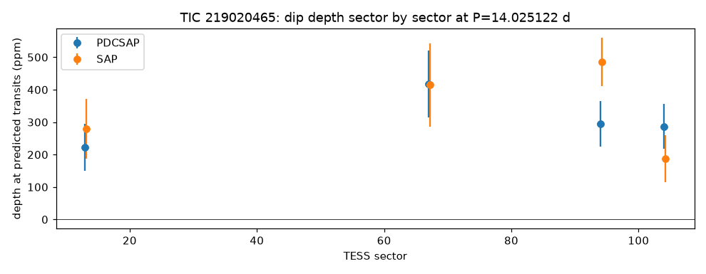
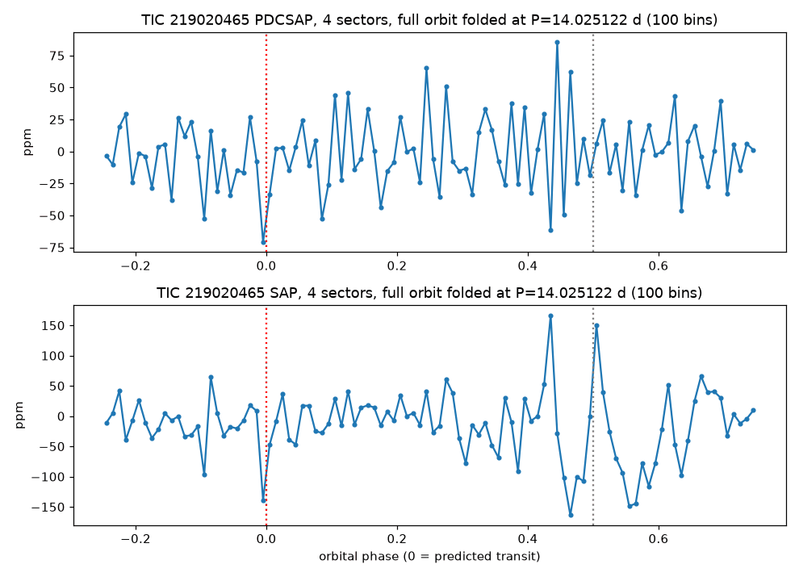

TRANSMISSION #022 ·
Deep dive on TIC 219020465: a steady one-hour dip that still doesn't add up
Update, 3 November: a research follow-up found the one-hour dips line up with the spacecraft's orbit and its thruster firings, disagree between the raw and cleaned data, and show a motion pattern in the pixels. The 14-day signal is now probably false positive.
Follow-up on TIC 219020465, the one signal from the first sector 104 draw still on the watch list at the time.
The star is magnitude 8.6, about 5,700 K, roughly 177 parsecs away and about 2.5 times the Sun's size, so it's probably a sun-like star starting to swell into a subgiant. The batch search found a dip of about 300 ppm every 14.025 days, roughly an hour long, with seven transits across sectors 13, 67, 94 and 104 (2019 to 2026). Odd and even dips were 294 and 297 ppm and nothing showed at the halfway point. If it's real and on this star, the object would be about 4.8 Earth radii, Neptune-sized. The signal-to-noise was 8.0, below the usual bar of 10.
The deep TLS search used the same four sectors, since that's all TESS has for this star, and did not recover the 14-day signal. Its only peak was at 18.93 days, which failed the odd/even and single-event checks. Part of the reason may be physical: TLS sizes its transit durations to the star, and a one-hour transit across a star 2.5 times the Sun's width at a 14-day orbit makes little sense. A central crossing should last about ten hours. An hour fits a grazing transit, or a dip on a smaller, denser star blended into the same light.
The dip itself holds up better than most. Measured event by event, the seven depths were 280, 249, 376, 353, 175, 502 and 133 ppm, each with an uncertainty near 95 ppm. Sector by sector they agree in the cleaned light curves (223, 418, 295 and 286 ppm) and in the raw ones (279, 414, 486 and 187 ppm). Placing a box of the same width at almost 2,000 other points in the 14-day cycle gives a typical scatter of 51 ppm, and none of them reaches 291 ppm. A full-orbit fold shows a single low point at the predicted time in both versions of the data.


Gaia gives the star a RUWE of 6.8, well above the roughly 1.4 where single stars usually sit. That points to an unresolved companion, which could be where the dip comes from, and it would dilute a real transit on either star. No nearby star looks like a culprit: the brightest within 90 arcseconds is G=12.6 at 72 arcseconds and would need to lose 0.8% of its light, and the closer ones are far too faint. ExoFOP has no TOI or CTOI here and the NASA Exoplanet Archive has nothing within 90 arcseconds.
Marked unsure: still an open candidate, and a weak one. The next TESS visit to this field is what will make or break it. A real 14-day signal will keep showing up at the same depth and the predicted time.
Every signal, explained (1)
Tap a row to open it. Sorted by signal strength.
TIC 219020465#1Vetted out: likely eclipsing binary 18.934 d · 450 ppm · SNR 11.1 · ~5.9 R⊕
Failed the automatic checks. Here's why:
- Alternating dips don't match. Odd-numbered dips average 586 ppm and even ones 311 ppm (3σ apart). A planet makes the same dip every time. Two different stars taking turns eclipsing each other, at twice this period, gives alternating depths.
- One dip does all the work. A single event carries 85% of the signal, so it could be a one-off glitch or a stray bump in the data.

Candidates table
| TIC | # | Status | Vet | P (d) | Depth (ppm) | Dur (h) | SNR | SDE | N | R⊕ | Flags |
|---|---|---|---|---|---|---|---|---|---|---|---|
| 219020465 | 1 | NEW_CANDIDATE | fail | 18.9338 | 450 | 1.43 | 11.1 | 10.3 | 4 | 5.9 | ODD_EVEN_MISMATCH ONE_EVENT_DOMINATES |
Diagnostic plots
Full pipeline report
Planet-hunter report
Generated 2026-11-03 10:16 UTC by hunt.py v1.0.0.
Stars processed
1 stars total: 1 done
Signals found: 1 (0 new and passing vetting, 1 new but failing vetting, 0 matching known planets/TOIs/CTOIs).
New candidates that passed the automatic checks
These are the ones to look at first. Passing the automatic checks does not make something a planet. Open each plot and follow the eyeball checklist in BOT_BRIEF.md before telling anyone about it.
none
New signals that failed vetting
Usually eclipsing binaries, stellar variability or instrument noise. Worth a glance, rarely more.
| TIC | # | P (d) | depth (ppm) | dur (h) | SNR | SDE | N tr | Rp est (Re) | flags | note | plot |
|---|---|---|---|---|---|---|---|---|---|---|---|
| 219020465 | 1 | 18.93376 | 450 | 1.43 | 11.1 | 10.3 | 4 | 5.89 | ODD_EVEN_MISMATCH ONE_EVENT_DOMINATES | no catalogued planet/TOI on this star | png |
Signals matching something already catalogued
A good sanity check: if the pipeline recovers known planets, it is working.
none
Stars with errors
none
Caveat
A NEW_CANDIDATE here is only a candidate. Most automatic detections in TESS data turn out to be eclipsing binaries (often a nearby star blended into the same pixels), stellar activity or systematics. Confirming a planet needs pixel-level checks, follow-up photometry, and usually spectroscopy. Promising, carefully checked signals can be shared on ExoFOP (as a CTOI) or with Planet Hunters TESS.